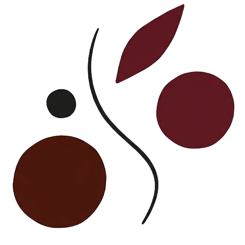

Структура, которую можно тестировать сценариями реорганизации и оценивать в деньгах до принятия решения. Импорт из 1С:ЗУП, параллельные варианты, AI-расчёт финансовых последствий, флаги структурных рисков.

Реорганизация — одна из самых дорогих операций в жизни компании. Стоимость ошибки измеряется в десятках миллионов: переплата по ФОТ, потери производительности, уходы ключевых людей, откат изменений через полгода.
При этом сам процесс планирования остаётся ручным. Структуру рисуют в PowerPoint, ФОТ считают в Excel, сценарии сравнивают на словах в переговорных. Ни один из этих способов не показывает, что будет с компанией после принятия решения.
Разрыв между ценой решения и инструментом, которым оно принимается, — это и есть та проблема, с которой мы работаем.
Столько структурных изменений в среднем проходит одна компания. Реорганизация — не разовый проект, а постоянная работа, которая идёт волнами.
Доля реорганизаций, которые начинают, но не доводят до конца. Проект останавливается уже в исполнении — ресурсы потрачены, результата нет.
Доля реорганизаций, которые завершаются и приносят компании то, что планировалось. Из пяти запущенных проектов четыре либо буксуют, либо не дают заявленного результата.
Привычные инструменты отвечают на один вопрос: «как это выглядит». У реорганизации вопросов больше.
Стоимость варианта структуры складывается из ФОТ, страховых взносов, накладных расходов и налоговой нагрузки — и меняется при каждом переводе функции, объединении отделов, сокращении уровня управления. Посчитать это вручную для одного сценария занимает дни, для пяти — не делается вовсе. Решение принимают по интуиции, цифры подгоняют после.
Альтернативы обсуждают на словах или переключают слайды в презентации. В переговорной одновременно держать три структуры с их финансовыми последствиями невозможно — внимание возвращается к последнему показанному. Выбирают тот вариант, который защищали громче.
Превышение нормы управляемости, критические роли без замены, дублирование функций между подразделениями — всё это проявляется после внедрения, в первые месяцы работы новой структуры. На этапе схемы этих проблем не видно: схема показывает, кто кому подчиняется, а не как система будет работать под нагрузкой.
Оргструктура подгружается из 1С:ЗУП и превращается в рабочую модель: сценарии, расчёт последствий, проверка на риски — в одном интерфейсе, собранном под задачу заказчика.
Живая схема оргструктуры, построенная из данных 1С:ЗУП. Видно все подразделения, должности, подчинение, численность — в одной интерактивной карте. Актуальность не нужно отдельно поддерживать — схема синхронизирована с 1С.
Изменение ФОТ, страховых взносов, накладных расходов и налоговой нагрузки — для каждой конфигурации структуры, в моменте. Цифры пересчитываются при любом действии: переводе функции, объединении отделов, сокращении уровня управления. Решение опирается на расчёт, а не на интуицию.
Режим «что если»: переносите подразделения, объединяете функции, убираете уровни управления — и видите, как меняется структура и её финансовый результат. Три-пять сценариев существуют параллельно, на одном экране. Можно сравнивать их, откатывать изменения, собирать гибриды из лучших частей разных вариантов.
Каждый вариант структуры автоматически проверяется против типовых структурных дефектов — тех самых, которые в схеме не видны, а в работе проявляются через три-шесть месяцев. Проблемные зоны помечаются прямо на схеме, на этапе моделирования. Риск становится видимым тогда, когда структуру ещё можно изменить.
Стратегическое решение принято — надо выбрать операционную модель под него. Объединять функции или разнести по бизнес-юнитам. Централизовать или оставить региональную автономию. Каждая альтернатива — на десятки миллионов, решение надо принять в ближайшие недели. Нужен способ сравнить варианты не на словах, а в цифрах — и зафиксировать основание для выбора.
Цель — сократить ФОТ и операционные расходы, цифра утверждена. Вопрос в том, откуда именно резать, чтобы через квартал структура не развалилась и не пришлось добирать людей обратно. Чтобы сокращение держалось, оно должно быть точечным: видно, какой управленческий слой избыточен, какие функции дублируются, где объединение не ломает процесс.
Приобретённая компания, новое бизнес-направление, вышли в другой регион — структура расширяется. Главный вопрос расширения — не где разместить новый блок, а как он встанет рядом с действующим без конфликтов зон ответственности. Стык проявится в работе, а не в схеме.
Каждая компания приносит свою структуру, своё штатное расписание и свой контур систем. Под этот контур мы собираем Микросервис из трёх компонентов — методики, расчётной модели и интеграции.
Что и как считается. Нормы управляемости, правила декомпозиции функций, признаки дублирования, критерии критичности роли — собираются в начале проекта, в опоре на отраслевую практику и внутренние регламенты заказчика. Методика — не «лучшая практика вообще», а та логика, по которой будет приниматься решение в этой компании.
Что меняется, когда меняется структура. Изменение ФОТ, страховых взносов, накладных и налоговой нагрузки рассчитывается для каждой версии оргструктуры в моменте. Часть расчётов закрыта формулами, часть — задачи на интерпретацию (компетенции, преемственность, контекст роли) — берёт на себя языковая модель.
Состав инструмента — от объёма импорта из 1С:ЗУП до глубины сценарного дерева и формата выгрузки — определяется задачей и масштабом компании. Формат интеграции обсуждается на старте проекта.
Чтобы показать логику Микросервиса в работе, мы собрали две короткие демонстрации. В первой — выбор между сценариями реорганизации с расчётом последствий. Во второй — диагностика готовой структуры по четырём типам рисков. В обеих — упрощённый фрагмент логики, по которой Микросервис собирается под реальный проект.
Производственный холдинг, 4 200 человек. Задача — сократить ФОТ на 15%. Финансовый директор предложил три варианта. Ваше решение — за тридцать секунд на каждый.
Реальная анонимизированная схема. На первый взгляд — нормальная иерархия. Микросервис нашёл четыре структурных дефекта, три из которых проявятся в первые шесть месяцев работы.
Разбираем задачу, структуру, ожидания. Решаем, нужен ли Микросервис и в какой конфигурации.
Готовим КП с объёмом, сроками, стоимостью. При подтверждении подписываем договор.
Согласовываем состав инструмента, правила расчёта, сценарии. На выходе — спецификация.
Собираем, интегрируем с 1С:ЗУП, калибруем модель. Показываем промежуточные версии.
Запускаем, обучаем команду, сопровождаем первый проект реорганизации в инструменте.
НКО «Люди. Бизнес. Будущее.» объединяет HR-директоров и экспертов рынка труда, которые работают с задачами работодателей: исследование рынка, формирование отраслевых стандартов, продвижение HR-повестки в СМИ.
Исследовательская лаборатория — направление, которое превращает исследования рынка труда в прикладные инструменты для конкретных компаний.
15 лет в HR крупного бизнеса. В Сбербанке (300 000+ сотрудников, 52 000 наймов в год) перевела функцию подбора на agile, собрала 14 продуктовых команд, подняла удовлетворённость внутренних клиентов с 37% до 77%. Возглавляла подбор, развитие и удержание в ПИК (25 000+ сотрудников). С 2024 — HR-директор группы HR-компаний, руководит проектами трансформации. В executive search с 2011 года, начинала в Kontakt InterSearch.
Все данные остаются в контуре заказчика. Микросервис разворачивается на инфраструктуре компании или в выделенной среде, согласованной с её службой ИБ. Лаборатория не хранит штатные расписания, не копирует данные сотрудников, не использует их вне проекта. Состав прав доступа, способ синхронизации с 1С:ЗУП и контур развёртывания согласовываются на этапе проектирования.
Нет. 1С:ЗУП — самая частая система кадрового учёта в крупных российских компаниях, поэтому интеграция с ней предусмотрена по умолчанию. Для SAP HCM, БОСС-Кадровик, Босс-Референт или собственных систем учёта интеграция собирается на этапе проектирования — это не меняет логику Микросервиса, меняет только модуль импорта. Уточнить применимость к вашей системе можно на диагностической встрече.
Стоимость определяется масштабом компании, сложностью расчётной модели и объёмом интеграционной работы. Расчёт готовится после диагностической встречи, когда сформулированы задача, контур систем и требования к составу инструмента.
Больше, чем обычно предполагается на старте. Проект требует регулярных рабочих сессий с ключевыми стейкхолдерами — не для формального согласования, а для совместной проработки задачи и методики расчёта. На этапе проектирования — одна-две встречи в неделю, на этапе разработки — участие в тестировании промежуточных версий, на внедрении — обучение команды трансформации. Точный объём определяется на диагностической встрече.
Языковая модель в Микросервисе не считает деньги — деньги считают формулы по правилам, согласованным на проектировании и проверяемым в ручном пересчёте. Языковая модель отвечает за задачи, где формула невозможна: оценка контекста роли, признаки критичности позиции, классификация дублирующих функций. Каждое такое решение модели сопровождается обоснованием и доступно для проверки экспертом.
Заказчику передаётся неисключительное право использования Микросервиса. Развитие инструмента в дальнейшем может вестись командой Лаборатории, силами заказчика или сторонним подрядчиком. Зависимости от единственного исполнителя не возникает.
Первая встреча — диагностическая, 45 минут. Разбираем вашу задачу, контекст и действующие процессы. На выходе — общее понимание, нужен ли вам отдельный инструмент и какого типа.